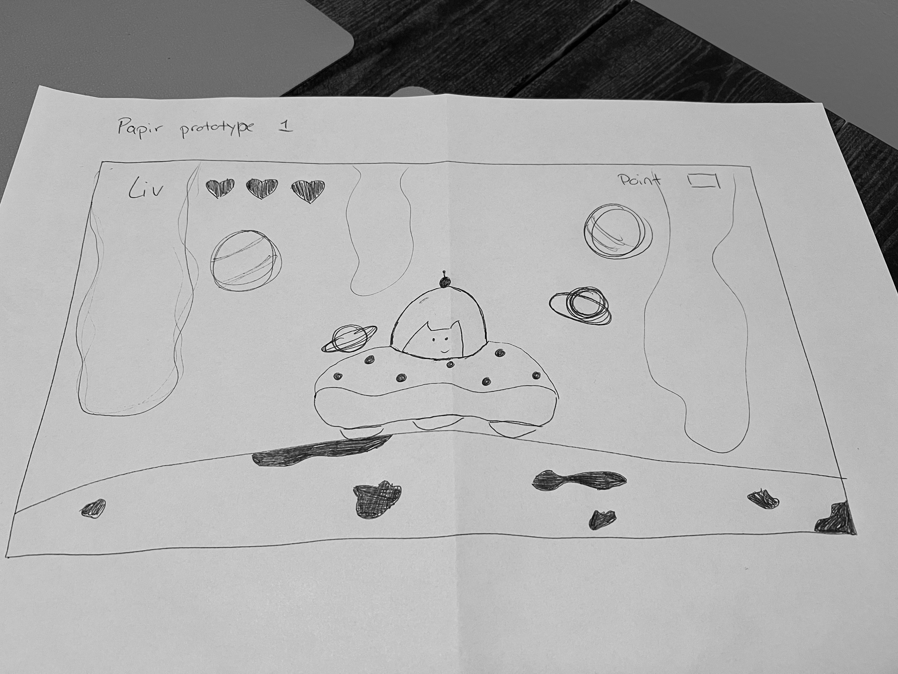
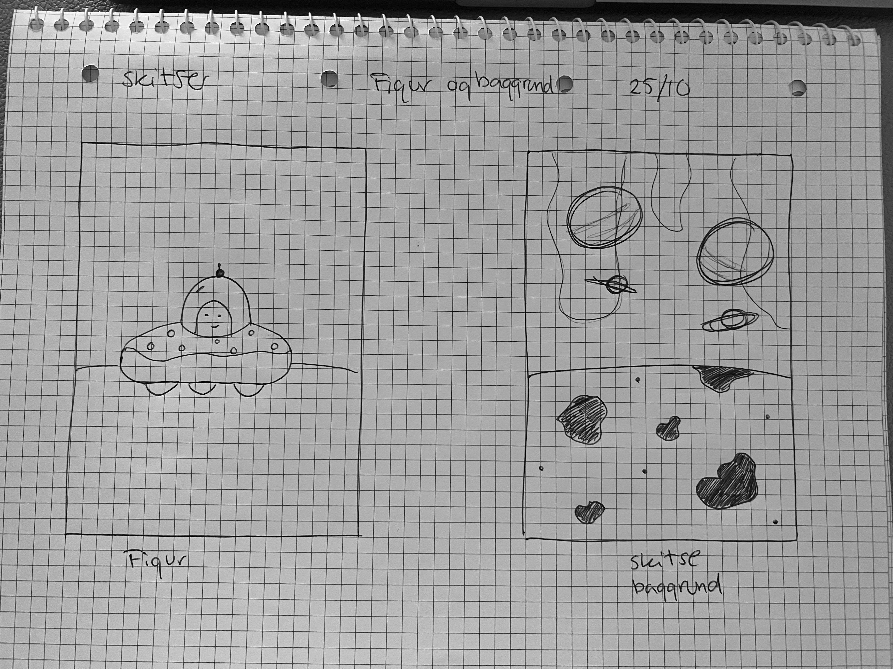
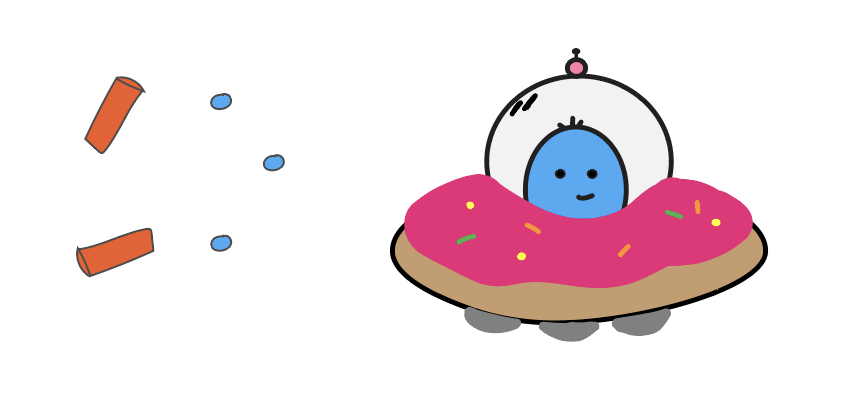
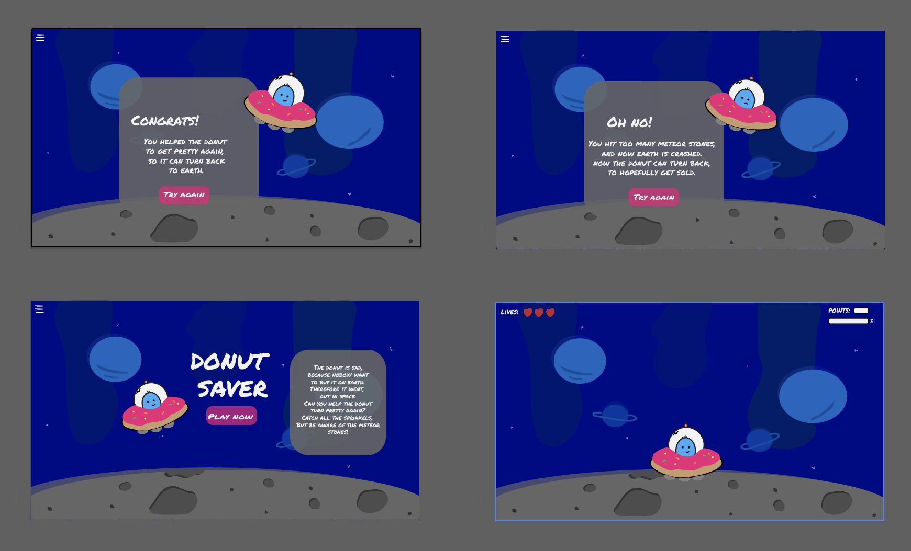
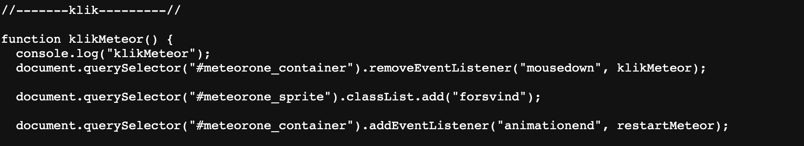

TEMA 4 - GRUNDLÆGGENDE ANIMATION
I Tema 4 kiggede vi på animation. Her skulle vi som en start få kendskab til Javascript og Adobe Illustrator. Dertil finde ud af, at anvende Inspector consol. Hver især skulle vi designe vores UI og spil elementer. Til denne udviklingsprocess, blev der tegnet skitser til dokumentation for formgivning af elementer. Skitsering af baggrundsdesign, start og slutskærm og figurer. Der skulle laves aktivitets og state machine diagrammer, til udførelse af spillet. Sidst var det selve kodningsprocessen, for at få spillet gjort klar til digital fernisering.
SPIL IDÉ
Skitsering
Papirprototype
I idefasen blev vi præsenteret for udvalgte stilarter. Dette dannede grundlag for, den angivne stil der er valgt. Her valgte jeg, at gå med stilarten ´Space´, da den så ligetil ud. Ud fra den valgte stilart, skulle der begives ud i udvikling af skærme og figur/elementer. Her søgte jeg lidt rundt, for at finde inspiration til min figur. Skærme designede jeg, udfra hvad jeg har set af space ligende spil mm. Vi skulle dertil også beslutte henholdsvis gode og dårlige elementer i vores eget spil.
DIAGRAMMER
Aktivitetsdiagram

Aktivitetsdiagram over handlingerne og forløbet i spillet Donut Saver. Her ser vi et klart overblik, over hvilke handlinger der finder sted. Du ved herefter, hvad der er de gode og de dårlige elementer i spillet. Dertil også, hvad man skal gøre for at få point og vinde i sidste ende.
Statemachinediagram

ADOBE ILLUSTRATOR
UI-elementer
 JAVASCRIPT
Til at kode spillet, skulle der bruges Javascript. Det var første introduktion til, at kode Javascript, og det var ikke uden problemer undervejs. I Javascript kan man addeér klasser, og fjerne dem igen. Altså, at tilføje et event. Til at begynde med, kaldes en bestemt funktion. I dette tilfælde ´klikMeteor.´ Dernæst kan vi med en document.querySelector, vælge en bestemt container (#meteorone_container). Denne kan du nu fjerne med en removeEventListener med efterfølgende ("mousedown", klikMeteor). Efter dette, skal en classList tilføjes, for at få en ´forsvind´ animation på. Dette lægges på (#meteorone_sprite) og gives ved classList.add ("forsvind"). Sidst skal en event tillægges igen, så animationen slutter. Dette gøres med en addEventlistener, og skrives ("#meteorone_container") .addEventlistener ("animationend", restartMeteor).
